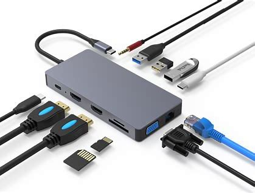

这是一篇拓展坞的使用说明书
使用说明书：拓展坞

- 产品概述
- 拓展坞是一种用于扩展电脑外部接口的设备。它可以通过插入电脑的 USB 接口来为用户提供更多的接口，以便于连接各种设备和配件。
- 规格
-
- 传输速率：最高可达 5Gbps
- 接口类型：USB 3.0/2.0
- 支持设备：键盘、鼠标、打印机、外置硬盘、闪存驱动器等 USB 设备
- 使用方法
-
- 将拓展坞的 USB 接口插入电脑的 USB 接口中。
- 在 Windows 或 Mac 系统上，会自动识别拓展坞并安装驱动程序。在 Linux 系统上，可能需要手动安装驱动程序。
- 将需要连接的设备或配件插入拓展坞的 USB 接口中。
- 可以通过拓展坞上的 LED 指示灯来了解当前连接状态。
- 注意事项
-
- 在使用拓展坞之前，请确保电脑已经关闭或者断开了电源。
- 请不要强制插入或拔出拓展坞，以免损坏设备。
- 在拓展坞连接的设备中，如果有需要大量传输数据的设备，如外置硬盘等，建议使用外部电源供电，以保证传输稳定性。
- 长时间使用拓展坞时，请注意通风散热，避免设备过热。
- 维护和保养
-
- 请不要将拓展坞暴露在阳光下或水中，以防止损坏设备。
- 拓展坞表面可以用软布轻轻擦拭，清洁时不要使用化学溶剂或者水。